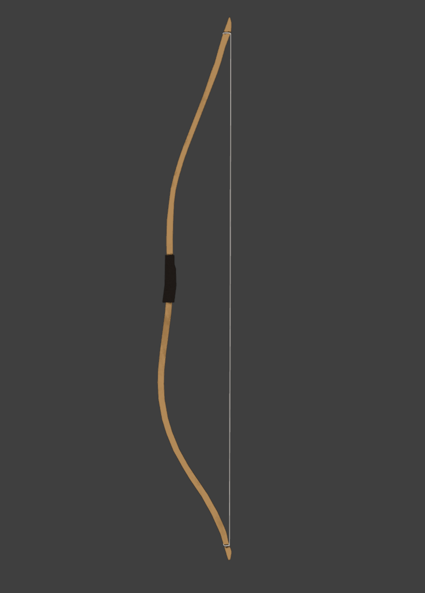

Content Warning:
This page includes lots of crude humor, and extreme cartoon violence. If you're not okay with that, do not proceed!
This page includes lots of crude humor, and extreme cartoon violence. If you're not okay with that, do not proceed!
While I did create projects before this one, I would say this was my first REAL attempt at making a videogame. As in, not just using random assets I stole from other games to create a mish mash of garbage. This was also one of my first serious introductions to coding/scripting. I used the gamemaker 1.4 engine, and followed many youtube tutorials and the documentation to get started. While it is fun to look back at, it really becomes clear how in over my head I was starting this project. I wanted to make a game full of selectable characters, destructible enviroments, and many more cool things that I had no idea how to implement. It also became clear to me that I needed to brush up on my art skills. Most of the art in this game didn't have one cohesive or unique style. I enlisted a friend's help with some of the later art, but I never did end up getting far in Johnny Cake.
Entombed is a game that went through many, many different iterations. As I started to learn the game maker engine better, and improve my pixel art, I quickly became dissatisfied with my old work. I would rewrite code often, redraw sprites, and even completely start the whole game over when things became too messy. While I didn't get far on Entombed, I did learn some invaluable lessons. I learned how to create state machines, improved my pixel art, and really started learning things on my own an experimenting. I wasn't just copying over youtube tutorials and stuff from the documentation anymore. I was actually creating a game. I also learned how to make little cutscenes, so I added tons of dumb little gags and dialogue between characters.
After spending months toiling away on Entombed, I became burnt out. I never really had a solid plan for where Entombed was going to go, and repeatedly restarting
the project had worn me down. I decided I wanted to try something else, from the beginning, and actually finish it from start to finish. While working on entombed,
I got a better grasp on how to make the objects in my game world better interact with each other. Using this new knowledge, I decided I wanted to make a funny game
with loads of cutscenes with visual gags and slapstick comedy. That's where the idea for Samurai Through Time came from. I had also improved on my pixel art skills quite a bit.
That being said, the gameply in this is very stiff, rough around the edges, there are plenty of crashes due to poor coding, and overall I would just describe the game as: Jank.
However, this was my first real project I finished from start to finish. It might not be the best, but it's mine, and I'm proud of it.
If you're interested, you can download it here!
Ryuto's Adventure Download on Itch.io
After finishing up Samurai Through Time, I was feeling inspired to create something where a single mechanic would drive the entire game. This single mechanic would be
used creatively to do multiple things. The first idea I settled on was a game where you played as a little ghost with a shotgun. The ghost moved incredibly slow, but
shooting the shotgun would push him backwards extremely fast. You could use the shotgun to attack enemies, but also as a movement mechanic to traverse the level. I had a lot
of fun creating this little demo. Somehow, when getting a new PC, I ended up formatting the drive this game was on. I'm still really mad at myself about this. Remember to
back up your hard work.
So, I started creating something new. I had the idea to have another slow moving character, who could charge up a kick attack, and use this
to traverse the enviroment. They could also use this kick in different directions to bounce off of obstacles. I spent a ton of time working on this mechanic and getting it just right.
The only problem was, it wasn't very fun. After 5 or so minutes, the novelty of kicking things around and bouncing around just wore off. However, I was still pretty attached to the character I drew.
At the time, I was really into martial arts movies. Specifically the movie: The Raid. I wanted to create something that would capture that fast paced action, but not take itself too seriously. At this point, I was a pro at making cutscenes. The challenge this time was creating satisfying combat. I tried out tons of other games that had extremely fun fast paced combat, such as Dead Cells, Salt and Sanctuary, and more. The first prototype I came up with had directional attacks in the same vein as Super Smash Brothers. You had "neutral" attacks that would be the default if you were not pushing any direction to move. You then had different moves that could push enemies in different directions depending on what direction you were pressing on the control stick.
While I could say I was proud of what I made, what I couldn't say, was that it was very fun. There was little to no difference between the attacks damage and utility wise, and creating so many different attack animations was difficult. I decided to scrap this, and move towards a more traditional beat em' up game approach. This made the work load much easier on myself, and I had a ton of great examples to pull from. I also was still adding in plenty of cutscenes with slapstick humor.
It's hard to say exactly why I stopped working on this project, but I would like to pick it up again one day. I do like the character design, and the basic gameplay ideas I had in place.
Some time in the early 2020s (it feels weird saying that now), I made the decision that I wanted to learn 3D game development. This was a huge undertaking, as the math required is much more complex, and I had never used a 3D modelling program before. I downloaded blender and the unity game engine, and got to work. After spending months screwing around with blender, I was finally able to make some basic models. I decided since I had previously used pixel art, I should work on using my pixel art style on to 3D models. After all, pixel art has less space you need to work with, easy right? Well no, as it turns out, most modern game developers don't exactly want their games to look like they're from the 90s anymore. Technology has progressed quite a bit, and we use all sorts of filtering methods on textures to make them look nice and smooth. Thats not to say it's impossible to achieve this look, just much more difficult than you'd expect.
Eventually, I would ditch this look entirely because of the amount of precision it required. It also limited me to create purely boxy looking models, which I wanted to get away from. Here's a screenshot from a prototype for a bow based FPS game I was creating as an example.
